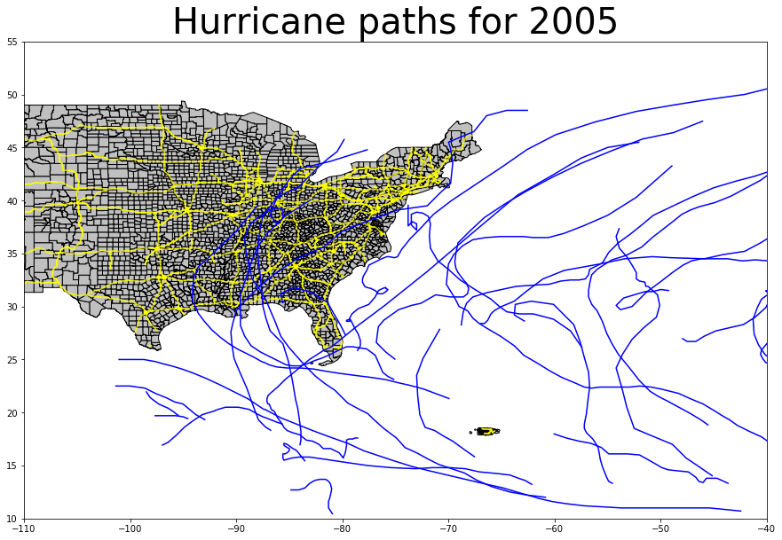
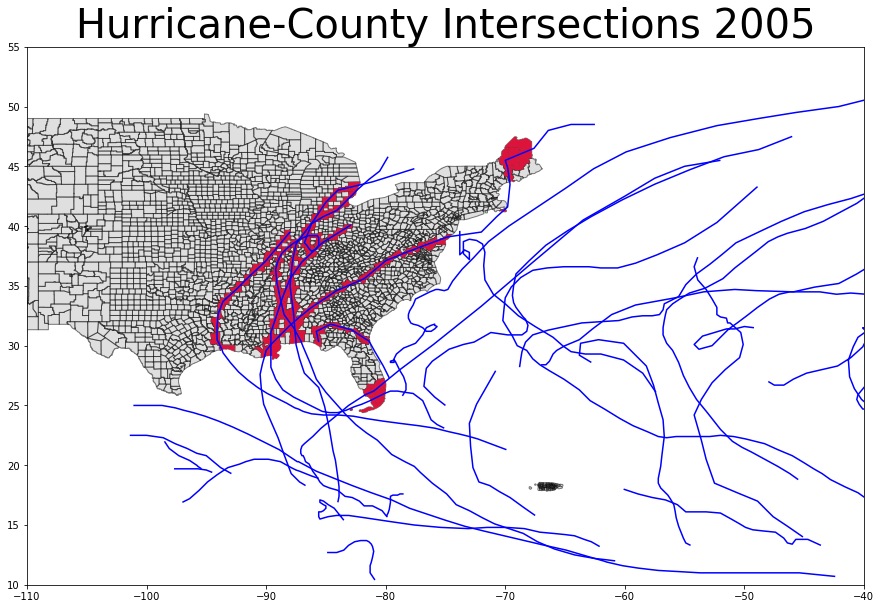
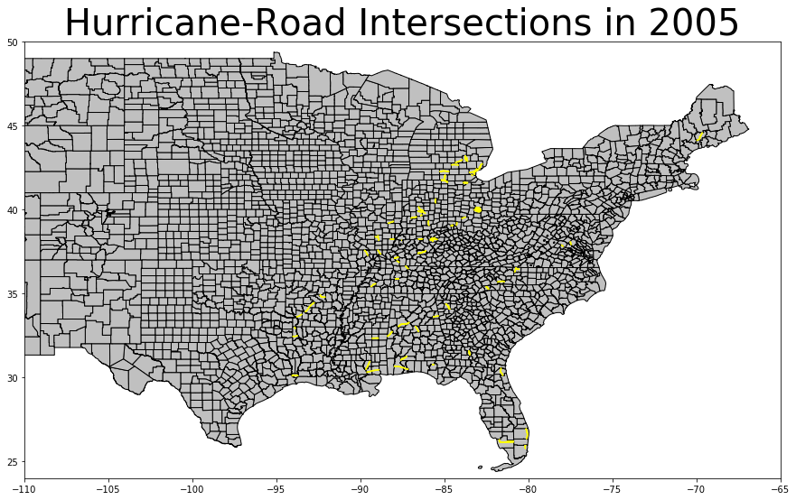
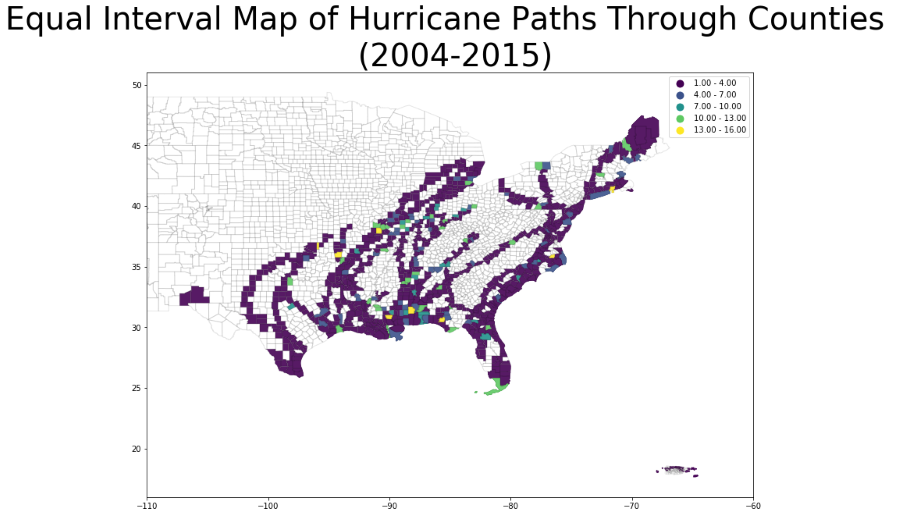

Hurricane and Storm Road Risk Visualization
Introduction
Hurricanes are one of the costliest natural disasters the US experiences on a regular seasonal basis. Monitoring their spatial distributions are some of the most important practical applications of GIS. This project analyzes hurricanes in the 10-year period from 2005-2014 and their intersections with counties and roads. This type of GIS visualization can be helpful in urban planning as well as disaster relief efforts. All the code and associated files are contained in my GitHub repository and can be found at: https://github.com/Argentum133/Hurricane-Vs.-Roads
Hurricane Mapping
Before we can delve into all the GIS analysis, it might be a good idea to see how everything is located spatially. The first step is to “clean” and prep the NOAA data whose original format can be download here: https://www.nhc.noaa.gov/data/hurdat/hurdat2-1851-2018-051019.txt. As you might be able to guess, the data is organized quite erratically. So, to create a python friendly format, I created new data-frames and saved it as MisEnPlaceFloat.csv after the culinary procedure of organizing ingredients (note: the data and code can be found in my GitHub repository listed above). Here is an example of all the hurricanes and storms in 2005 (yellow lines represent roads, and blue lines represent storms).
To map the hurricanes, we take the coordinates (latitude & longitude) and create mappable points using the Shapely python package. We can create a “line-string” from the points and create a geo data-frame that we can plot on a map as individual elements. A full gif animation of all years can be found here.
Mapping Counties Affected By Hurricanes
In the above hurricane mapping procedure, the storms are represented with a simple blue line. Of course, the breadth and extent of a hurricane isn’t quite linear. Mapping the intersection between hurricane’s represented by lines and counties may not represent the full extent of storm related events, but it gives us a good idea of the spatial distribution of potential destruction.
The areas in red represent counties that have had hurricanes pass through them. This type of intersection method is quite useful because it allows us to perform more useful GIS methods such as SQL queries that show specific affected counties, or create buffers to highlight areas of possible damage.
Hurricane and Road Intersections
Mapping roads which might be affected by hurricanes, is one of the top priorities of disaster relief teams. Crews can’t respond to concerns if roads are damaged or inaccessible. GIS allows us to efficiently plan disaster relief by mapping which roads might be affected and allows us to network possible alternative routes. Down below, I have created a GIF animation highlighting affected roads in blue.
Results Classification
States of the US southern coast must consistently prepare for extreme weather damage, having to sequester large portions of their budgets towards disaster relief. By taking a historical record of affected areas, GIS classification maps can visually show which areas have been most affect, thus allowing local governments to allocate additional preventative measures for future planning. Down below, we can see an example of it’s usefulness.
